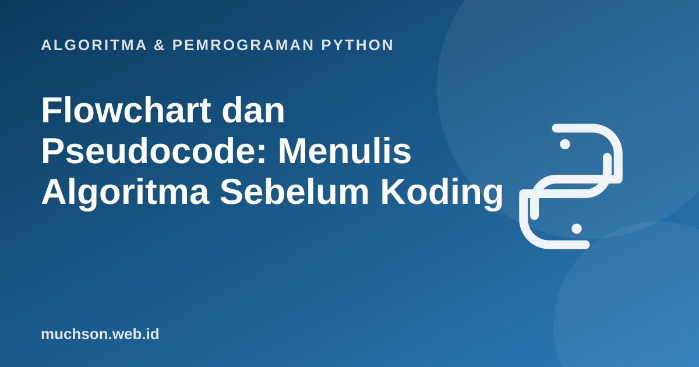

Beranda › Artikel › Algoritma & Pemrograman Python
Algoritma & Pemrograman PythonFlowchart dan Pseudocode: Menulis Algoritma Sebelum Koding
Flowchart dan pseudocode adalah dua cara menuliskan algoritma sebelum menjadi kode. Keduanya membuat kesalahan logika terlihat sejak awal, saat memperbaikinya masih murah. Materi ini menunjukkan cara membuat keduanya dengan benar dan menerjemahkannya ke Python.
Sebaiknya sudah paham: arti algoritma dan lima sifatnya

Setelah membaca dan mencoba materi ini, Anda mampu:
- membaca dan menggambar flowchart dengan simbol standar
- menulis pseudocode yang jelas dan konsisten
- menerjemahkan pseudocode ke kode Python dan sebaliknya
- memeriksa kebenaran algoritma lewat penelusuran manual
Simbol flowchart yang wajib dikenal
Aturan menggambar flowchart
- Hanya ada satu terminator mulai. Boleh lebih dari satu terminator selesai bila perlu, tetapi satu lebih rapi.
- Alur dibaca dari atas ke bawah dan kiri ke kanan.
- Setiap keputusan punya tepat dua keluaran yang diberi label (ya/tidak atau benar/salah).
- Setiap panah punya arah, dan tidak ada simbol yang "menggantung" tanpa sambungan.
- Isi simbol ringkas: satu tindakan per proses.
Contoh 1: menentukan kelulusan
Aturan: nilai akhir 60 atau lebih dinyatakan lulus, selain itu tidak lulus.
Pseudocode-nya, lalu Python-nya:
ALGORITMA Kelulusan
BACA nilai
JIKA nilai >= 60 MAKA
TULIS "Lulus"
SELAIN ITU
TULIS "Tidak lulus"
AKHIR JIKAnilai = 72
if nilai >= 60:
print("Lulus")
else:
print("Tidak lulus")Lulus
Contoh 2: faktorial dengan perulangan
n! = 1 × 2 × ... × n, dengan 0! = 1.
ALGORITMA Faktorial
BACA n
hasil ← 1
UNTUK i ← 1 SAMPAI n LAKUKAN
hasil ← hasil × i
AKHIR UNTUK
TULIS hasiln = 5
hasil = 1
for i in range(1, n + 1):
hasil = hasil * i
print(n, "! =", hasil)5 ! = 120
Kamus penerjemah pseudocode ke Python
| Pseudocode | Python |
|---|---|
| x ← 5 | x = 5 |
| BACA x | x = int(input()) |
| TULIS x | print(x) |
| JIKA ... MAKA ... SELAIN ITU | if ... : ... else: ... |
| SELAMA kondisi LAKUKAN | while kondisi: |
| UNTUK i ← 1 SAMPAI n | for i in range(1, n + 1): |
| a MOD b | a % b |
| a DIV b | a // b |
Di Python, blok kode ditandai oleh indentasi (spasi di awal baris), bukan oleh kata penutup seperti AKHIR JIKA. Biasakan 4 spasi untuk satu tingkat.
Cara memeriksa algoritma: tabel penelusuran
Sebelum menjalankan kode, kerjakan algoritma di atas kertas dengan satu contoh. Buat tabel berisi nilai variabel pada tiap langkah. Cara ini menangkap sebagian besar kesalahan logika. Contoh untuk faktorial n = 4:
| Langkah | i | hasil sebelum | hasil sesudah |
|---|---|---|---|
| 1 | 1 | 1 | 1 |
| 2 | 2 | 1 | 2 |
| 3 | 3 | 2 | 6 |
| 4 | 4 | 6 | 24 |
1. Gambarlah flowchart untuk menentukan bilangan terbesar di antara tiga bilangan a, b, dan c. Berapa keputusan minimal yang diperlukan?
max(a, b, c), atau t = a if a > b else b; t = t if t > c else c.2. Tulis pseudocode untuk menghitung jumlah bilangan 1 sampai n, lalu terjemahkan ke Python.
jumlah = 0
for i in range(1, n + 1): jumlah += i. (Rumus langsung: n(n+1)/2.)3. Apa yang salah dengan: SELAMA x > 0 LAKUKAN, TULIS x (tanpa mengubah x)?
- Flowchart memperlihatkan alur secara visual, pseudocode menuliskannya dalam teks mirip kode.
- Keputusan selalu punya dua keluaran berlabel.
- Terjemahkan pseudocode ke Python dengan memperhatikan indentasi.
- Tabel penelusuran manual adalah alat uji logika yang murah dan ampuh.
Tanya jawab
Apakah pseudocode punya standar baku?
Apakah flowchart masih dipakai di industri?
Alat apa untuk menggambar flowchart?
Referensi
- Allen B. Downey, Think Python (edisi ke-3), buku teks terbuka
- Anany Levitin, Introduction to the Design and Analysis of Algorithms (buku teks)
- Dokumentasi Python: Control Flow Tools